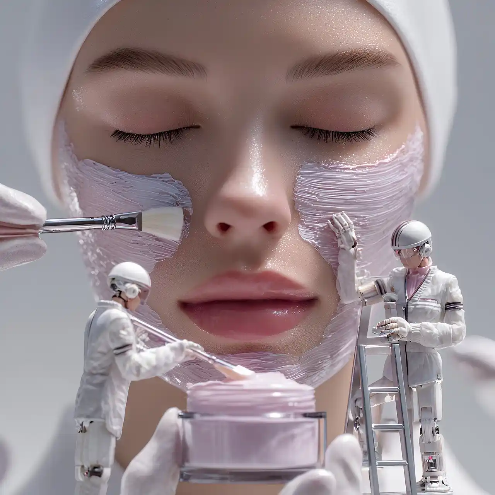
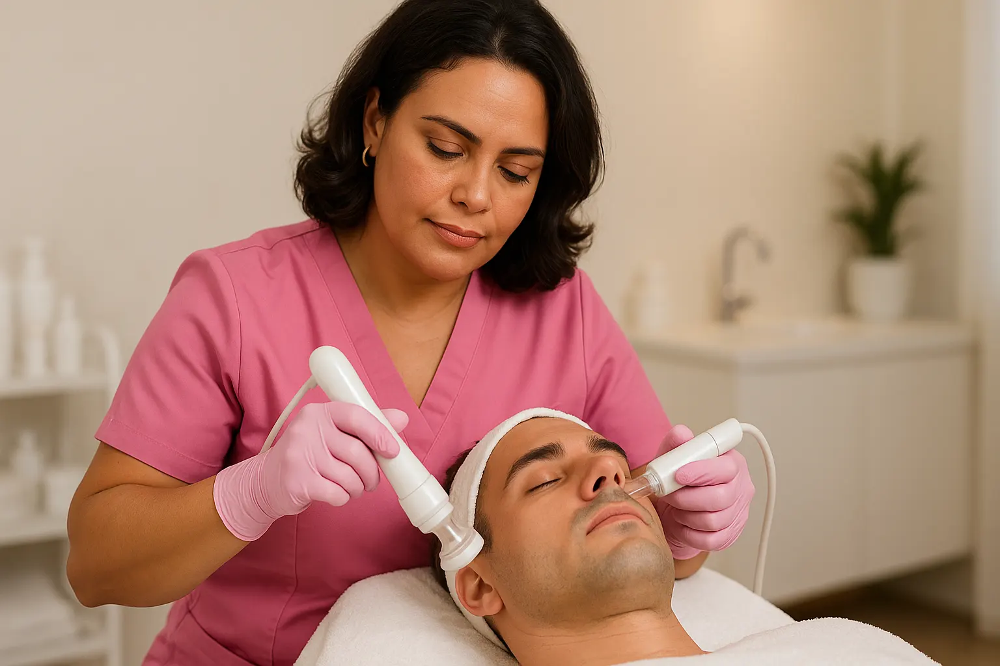
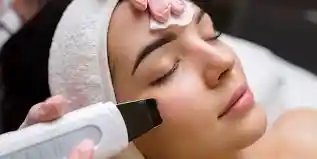
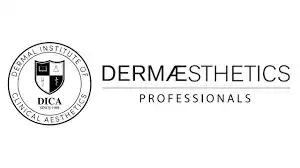
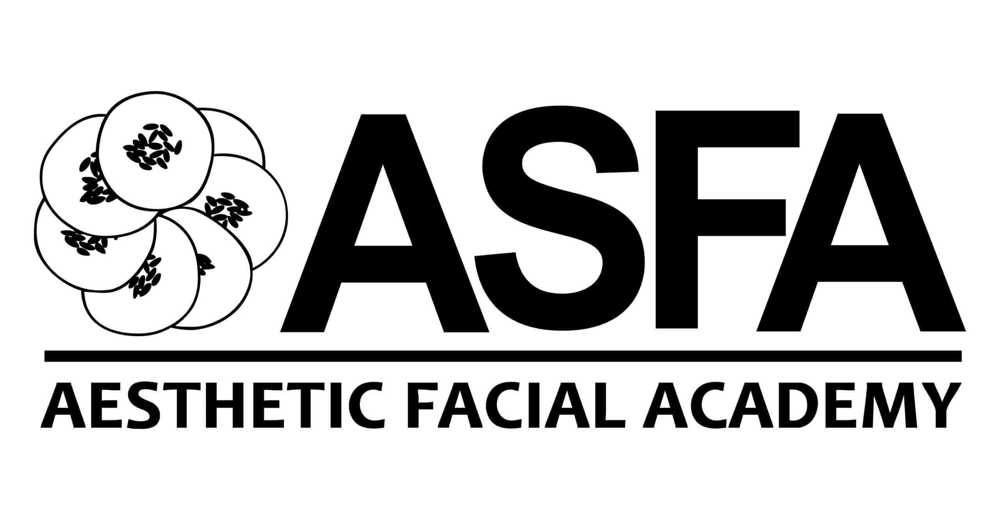
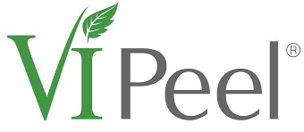
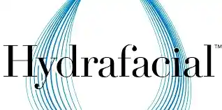

Cuidado avanzado de la piel en manos expertas
Soy Isabel Cadavid, esteticista certificada con formación en estética avanzada. A lo largo de mi trayectoria he obtenido múltiples titulaciones en procedimientos faciales, aparatología estética y tratamientos especializados para el cuidado de la piel. Cada protocolo que diseño está pensado para ofrecer resultados visibles y una experiencia de bienestar integral.



Estética avanzada personalizada
Mi constante preparación me permite ofrecer protocolos seguros, personalizados y basados en evidencia, adaptados al tipo de piel, necesidades y objetivos específicos de cada persona. Combino técnica, conocimiento y sensibilidad para que cada sesión sea una experiencia única de cuidado.
Tratamientos realizados
Protocolos faciales y estéticos diseñados de forma personalizada
Clientes satisfechos
Basado en comentarios y resultados visibles en la piel
Años de experiencia
En estética avanzada y cuidado integral de la piel
Mi misión
Ofrecer tratamientos faciales y estéticos que respeten la salud de la piel, combinando aparatología, técnicas avanzadas y un enfoque humano para que cada persona se sienta cuidada, escuchada y renovada.
Mi visión
Ser un referente en estética avanzada, donde cada tratamiento sea una experiencia de autocuidado consciente, con resultados visibles y un impacto positivo en la autoestima y el bienestar de mis clientes.
Mi compromiso
Brindarte un espacio seguro y profesional, con protocolos basados en evidencia, higiene rigurosa y productos de calidad, donde tu piel y tu bienestar sean siempre la prioridad.
Especialidades en cuidado de la piel
Cada tratamiento se diseña según las necesidades de tu piel, combinando técnicas manuales y aparatología estética.
Formación y certificaciones
Respaldada por cursos, talleres y certificaciones en estética avanzada, aparatología y cuidado profesional de la piel.



